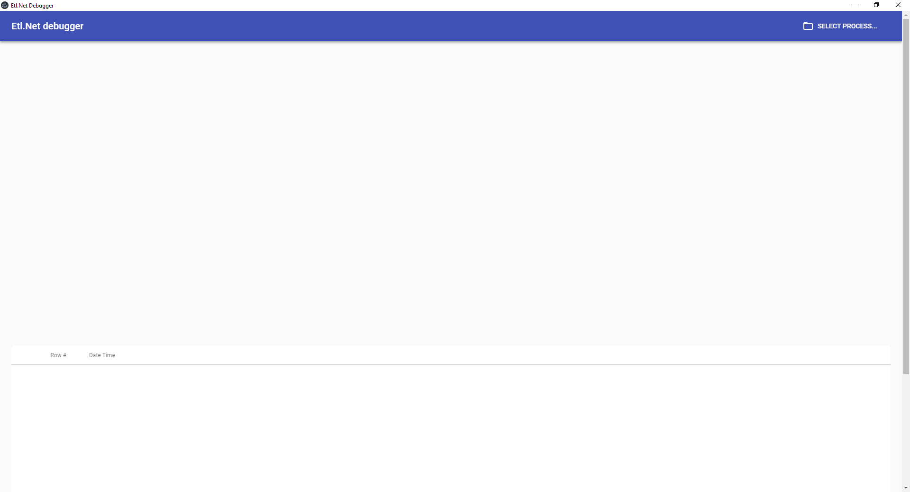
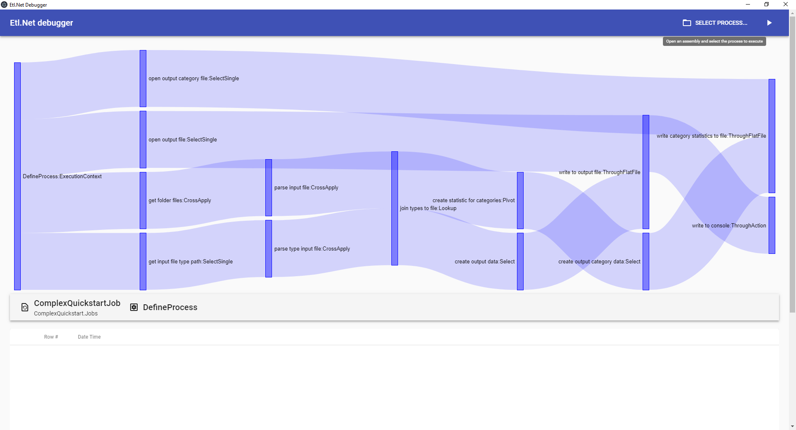
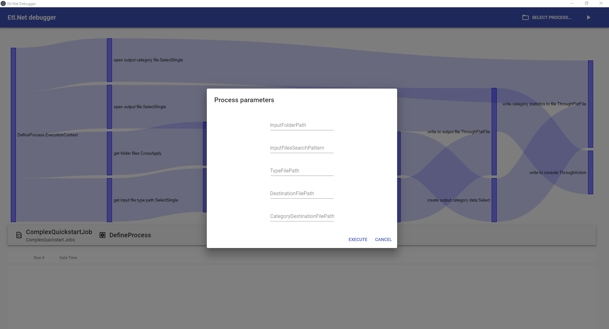

Etl.Net Debugger
Tool to debug Etl.Net processes.
Features
- View the list of process descriptions in an assembly
- View the detailed description of a process
- Execute a process by providing its input values
- View rows issued by each node of the process
- View the detail of a row issued by a node of the process
How to use Etl.Net Debugger
Open the application electron.net.host.exe
The application takes a little while to open and there is no splash screen at the moment. It shows an empty screen awaiting the user to select a process.

Click on SELECT PROCESS
This will show a form for the user to select an assembly and a process.

Drag and drop the assembly that contains the process on the dedicated area
This will show the list of processes contained in the selected assembly.
Note
Processes must be static methods with this signature:
public static void AnyMethodName(ISingleStream<AnyClassType> rootStream)

Click on the process that must be executed or verified
This will show the detailed structure of the selected process. 
Click on RUN (the play icon at the right of SELECT PROCESS)
This will show a form were values of properties of the input config type can be given.
Note
Type that are not natively serializable in .net will cause a failure for execution. To run such a process, create a dedicated process that wraps this process.

Click on EXECUTE
This will run the process by providing real time evolution of the process. The quantity of rows issued by each node will impact the thickness of the matching stream representation.
Note
Errors in the process execution are not properly handled yet in this version.

Click on a node
This will show the list of events issued by this node, including issued rows.

Click on a row
This will show the detail of the trace (including the content of the issued row).